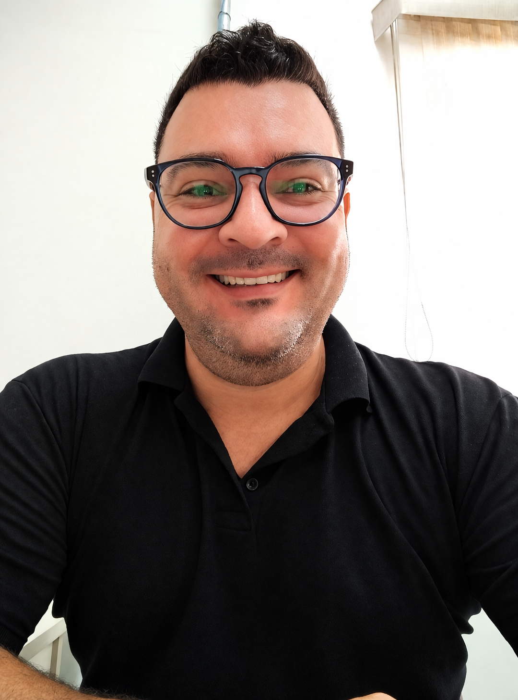

Offline AI Kit for Education
Local AI ecosystem designed for education, research, and secure environments.
Offline AI
Education
Research
Open project ↗
Project leadership, analytics, and applied research across corporate and academic contexts.
This portfolio brings together selected work in digital transformation, data-driven decision support, education-focused research, and technical initiatives with real operational value.

A cleaner selection of projects that best represent your professional and academic profile.
Local AI ecosystem designed for education, research, and secure environments.
Forecasting initiative for agile teams based on delivery history and probabilistic thinking.
Dashboards and structured views for costs, operational indicators, and executive follow-up.
Examples of measurable or strategic value delivered through automation, analytics, and cross-functional execution.
A key differentiator in your profile is the connection between academic production and practical implementation.
Current work focuses on computational thinking, educational performance, and the role of computing education in relation to international indicators such as PISA. This direction also supports the technical output represented by the offline AI initiative for education and secure research contexts.
A profile that combines strategy, delivery, analytics, and evidence-based thinking.
Experience spans project leadership, business-technology integration, digital transformation, dashboarding, and applied research. The strength of the profile is not only technical execution, but the ability to translate complexity into structured outcomes and decision-ready visibility.
This section now works as a real destination in the page and contains the main public entry points to your professional presence.